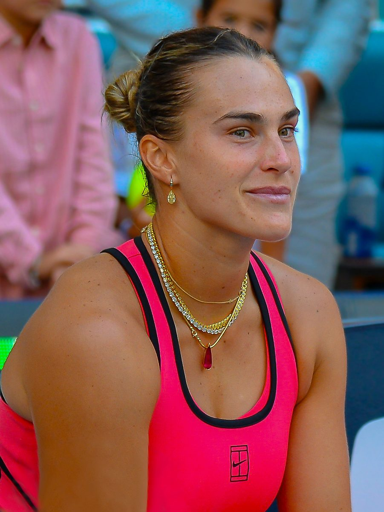

Andreeva Wins 11 Games in a Row to Beat Sabalenka and Reach the WTA Finals Semi-Finals
The 19-year-old won 6-4, 6-0 in Indian Wells to top Group 2 on her debut, becoming the first Russian to advance from the group stage since Svetlana Kuznetsova in 2016.

What happened
Mirra Andreeva beat Aryna Sabalenka 6-4, 6-0 at the WTA Finals in Indian Wells on Wednesday 11 November 2026 to secure a place in the semi-finals. Sabalenka, the world No 2, led 4-1 in the first set with a break of serve. Andreeva then won the next 11 games in a row, breaking Sabalenka in all three of her service games in the second set.
It was the 19-year-old's second win in two Group 2 matches. She opened the tournament by beating Elina Svitolina by the same score, 6-4, 6-0, and has not dropped a set. "I'm even happier than I was after my first match," Andreeva said in her on-court interview.

Why it is being talked about
Andreeva, the world No 3 and French Open champion, is playing the season-ending event for the first time. She is the first Russian player to advance from the group stage since Svetlana Kuznetsova in Singapore in 2016, and the youngest semi-finalist at the event since Caroline Wozniacki in 2009. The scoreline was also striking against an opponent ranked one place above her: after leading 4-1, Sabalenka won only 10 of the last 55 points.
Key facts and numbers
- Score: Andreeva 6-4, 6-0 Sabalenka.
- Run: 11 games in a row, from 1-4 down in the first set to the end of the match.
- Group 2 record: two wins, no sets lost, over Svitolina and Sabalenka.
- Format: eight players in two groups of four; the top two in each group reach the semi-finals.

What happens next
Andreeva has already secured first place in Group 2 and plays Karolina Muchova, who cannot advance, in her final group match on Friday. On the same day, Sabalenka plays Svitolina for the group's second semi-final place; Svitolina beat Muchova 3-6, 6-2, 6-2 on Wednesday. The semi-finals are on Saturday and the tournament ends on 15 November.